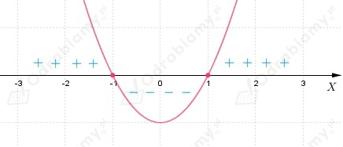

| Twierdzenie: 1) Jeżeli pochodna funkcji f jest dodatnia w przedziale (a, b), z wyjątkiem co najwyżej skończonej liczby punktów, w których przyjmuje ona wartość 0, to funkcja f jest w tym przedziale rosnąca. 2) Jeżeli pochodna funkcji f jest ujemna w przedziale (a, b), z wyjątkiem co najwyżej skończonej liczby punktów, w których przyjmuje ona wartość 0, to funkcja f jest w tym przedziale malejąca. Jeśli funkcja f jest rosnąca (malejąca) w przedziale (a, b) i jest ciągła w przedziale <a, b>, to jest rosnąca (malejąca) w przedziale <a, b>. |
a)
Wyznaczamy pochodną:
Szkicujemy wykres funkcji f':

Z wykresu pochodnej odczytujemy, że:
Na podstawie twierdzenia wnioskujemy, że funkcja f rośnie w przedziałach:
natomiast funkcja f maleje w przedziale:
Zauważamy, że funkcja f jest wielomianem, czyli jest funkcją ciągłą, zatem
co należało uzasadnić.
b)
Wyznaczamy pochodną:
Rozwiązujemy nierówności:
Zauważamy, że mianownik ułamka jest zawsze dodatni, zatem, aby
wartość powyższego wyrażenia była dodatnia, to musi być spełniona nierówność:
wobec tego:
Rozwiązujemy nierówności:
Zauważamy, że mianownik ułamka jest zawsze dodatni, zatem, aby
wartość powyższego wyrażenia była ujemna, to musi być spełniona nierówność:
wobec tego:
Na podstawie twierdzenia wnioskujemy, że funkcja f rośnie w przedziale:
natomiast funkcja f maleje w przedziale:
Zauważamy, że funkcja f jest wielomianem, czyli jest funkcją ciągłą, zatem
co należało uzasadnić.